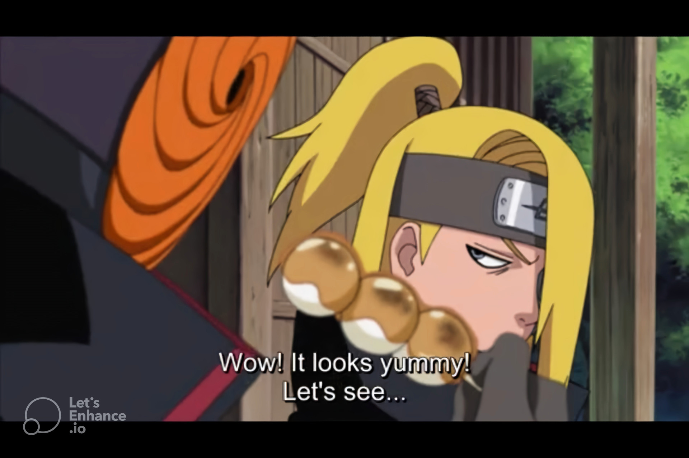

Dangos

Both Heroes And Villains Enjoy Dango
Dango is one of the most prevalent foods in Naruto, and viewers have no shortage of scenes where a wide range of characters eat it.
Usually, villains don't appear to eat desserts, as they are too busy scheming and creating their evil plans. But contrary to what
viewers expect, Obito and Deidara are shown eating Dango.
About Dangos
Dango is a Japanese dumpling made from rice flour mixed with uruchi rice flour and glutinous rice flour. It is different from the
method of making mochi, which is made after steaming glutinous rice.
Dangos Ingredients
- Joshinko glutinous rice flour
- Shiratamako glutinous sweet rice flour
- Powdered sugar
- Hot water
- Matcha powder
- pink food coloring
Steps to make your Dangos
-
Mix the rice flour and water
-
Divide the dough.
-
Color the pink dough
-
Color the green dough
-
Shape the dough into balls
-
Cook the white dango balls
-
Cool the dango ball.
-
Repeat with the pink and green balls.
-
Skewer the dango
-
Cook them in the right order– Start with the white,
then the pink, and then the green last, lightest to darkest.
your dangos are ready to be served